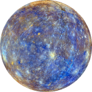

Меркурий
Меркурий — ближайшая к Солнцу планета Солнечной
системы, которая находится на расстоянии
58 миллионов километров от него. Период обращения
вокруг Солнца — 88 земных суток. Период обращения
вокруг своей оси — 59 земных суток,
то есть меркурианские сутки лишь в полтора раза
меньше меркурианского года. Является самой горячей
после Венеры планетой Солнечной системы
и одновременно с этим планетой с самым большим
перепадом температур. На обращенной к Солнцу стороне
температура поверхности может достигать 430°C,
тогда как на темной стороне она может падать до -193°C.